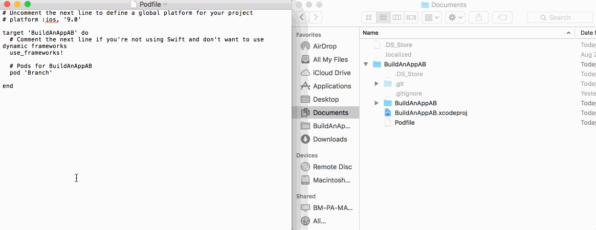

Getting the SDK
Installing Cocoapods¶
The quickest way to get the Branch SDK is by using the dependency manager Cocoapods. However, before you can use Cocoapods to get the Branch SDK, you must first install Cocoapods itself. To do this:
- Open a terminal window
- Paste in the command:
sudo gem install cocoapods
The
sudocommand provides special permissions needed to install Cocoapods, so you'll need to enter your computer password when prompted
Once the command finishes running:
- Type
cdinto the terminal window, and add a space - Drag and drop your project folder (eg
BuildAnAppJB) into the terminal window. Your command should now look something similar to:cd /Users/<your name>/Documents/BuildAnAppJB - Press enter:

Once you have a terminal window in the same location as your app's code, we can install the Branch SDK.
Adding the Branch Pod¶
To add the Branch SDK to your Xcode project, we need to initialize cocoapods. To do this, run:
pod init
from the terminal window we set up previously. This will create a new file in your project folder called, descriptively, Podfile:

This file contains all of the other code libraries, like the Branch SDK, that your project will use. To add Branch to this list of libraries:
- open the
Podfilein a text editor - Paste in
pod 'Branch'below the line#Pods for ...
Depending on your computer settings, the
Podfilemay or may not open in a text editor when you double click it. To be safe, you can right click the file and selectOpen with -> <Some text editing application>. Note that if you chooseTextEdit, be carefull that you pastepod 'Branch'into the file, instead of typing it manually, or you will end up with the wrong type of''s (yes, there are multiple types).

With the Branch pod declared, save the file and close your text editor. Then run:
pod install
in your terminal window to add the SDK files and generate a new Xcode workspace:

Using the new project¶
Because of the way that Xcode and Cocoapods interact to handle project dependencies like the Branch SDK, you won't be able to continue using the projectName.xcproject file to work on your app. Instead, you need to use the projectName.xcworkspace file the was generated in the above steps. This xcworkspace file allows you to use both your code, and the Branch SDK code in the same project. To switch, simply quit Xcode and double click the new .xcworkspace file.
Exposing the SDK¶
Branch SDK is created in a different language than your app, so to be able to use the SDK in your app, you need to add a Bridging header to your project, to allow your Swift code to make use of the Objective C code in the SDK. To do this:
- Select
File -> New -> Filein Xcode - Select the
Header fileoption
You can name this file whatever you like, but convention is to follow a
YourAppName-Bridging-Header.hformat.
After the file has been created, replace all of its contents with:
// // Use this file to import your target's public headers that you would like to expose to Swift. // #import <Branch/Branch.h> #import <Branch/BranchUniversalObject.h> #import <Branch/BranchLinkProperties.h>